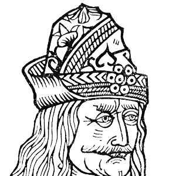

images / words / things left unsaid
offline.

Some stories are
better left in pictures.
VENI, VIDI, AMAVI (opens Spotify in a new tab)listen on spotify
A CAPITE AD CALCEM (opens Spotify in a new tab)listen on spotify
I WAS @ZANYPUNK
images / words / things left unsaid

Some stories are
better left in pictures.
I WAS @ZANYPUNK